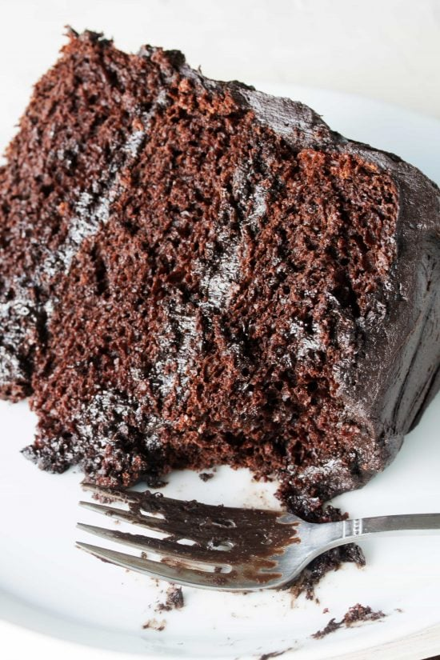

Chocolate Cake Recipe

Description
Decadent. Moist. Chocolatey perfection. The cake of your dreams comes alive
After decades of perfecting this recipe, I think we might have created the pinnacle of taste for every chocolate lover out there. This cake will melt any cold heart and fill every palet with moist and joyous flavor - a basic morning for us
The one-bowl batter we offer through this recipe might be the one you have been looking for. So batter - pun intended - down your hatches and get your aprons. Let's make cake!
Ingredients
- 3 cups all-purpose flour
- 1 tablespoon baking soda
- 1⁄2 canola or vegetable oil
- 1 1⁄2 cup unsweetened cocoa powder
- 2 cups granulted sugar
- 1⁄2 cup lightly packed brown sugar
- 4 large eggs
- 1 1⁄2 cup brewed coffee
- 2 teaspoon vanilla extract
- 1⁄2 teaspoon salt
- 1 1⁄2 cup buttermilk
Steps
- Preheat your oven to 350°F (176°C). Lightly grease three 9-inch cake rounds or dust with flour or cocoa powder. Alternatively, you can lightly grease the pans and line them with parchment paper.
- In a large mixing bowl, mix together the flour, sugar, cocoa, baking soda, baking powder, and salt in a stand mixer using a low speed until combined.
- Add the eggs, buttermilk, warm water, oil, and vanilla. Beat on a low speed until smooth, scraping the sides and bottom of the bowl to ensure everything is mixed in.
- Divide the batter evenly among the three prepared pans, about 3 cups per pan. Tap the cake pans gently on the counter to allow any bubbles to rise to the top and escape.
- Bake for 30-35 minutes in a 350°F (176°C) oven until a toothpick inserted into the center comes out clean.
- Cool the cakes on wire racks for 15 minutes, then remove them from the pans and place them on the wire racks to cool completely.
- Frost with your favorite frosting and enjoy